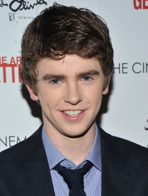
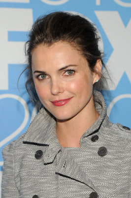
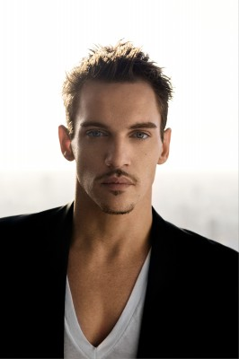
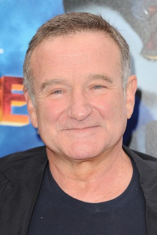
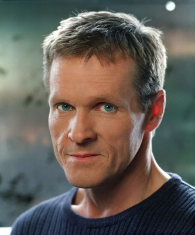
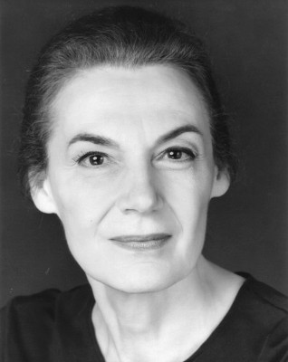
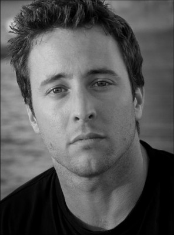
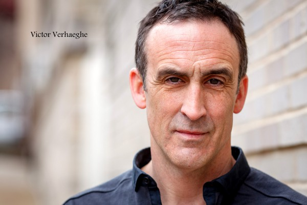
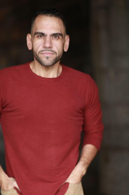
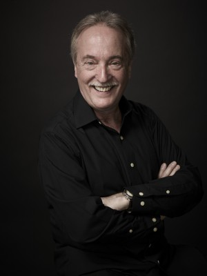

#222 Der Klang des Herzens
Alternativ: August Rush
Auszeichnungen: für 1 Oscars nominiert


 IMDB-Wertung: 7.5 / 10
IMDB-Wertung: 7.5 / 10  Metascore: 38
Metascore: 38 
Vom Schicksal getrennt, nur durch die zauberhafte Kraft der Musik verbunden, suchen Louis, Lyla und Evan nach dem für andere Menschen normalen Familienglück. Vor der Kulisse des Big Apple entfaltet Regisseurin Kirstin Sheridan ein melancholisches und zugleich modernes Märchen.
Jahr: 2007
Dauer: 114 Minuten
FSK: 6
Land: USA Studio: Warner Bros.Tonspuren: DTS - ,
Untertitel:
Auflösung: 1080p (1920×800) Größe: 7864 MB
Genre: Drama, Musik
Regisseur: Kirsten Sheridan
Drehbuch: Nick Castle, James V. Hart, Paul Castro, Nick Castle
Soundtrack: Mark Mancina
Darsteller:
-  Freddie Highmore als Evan Taylor - 'August Rush'
-  Keri Russell als Lyla Novacek
-  Jonathan Rhys Meyers als Louis Connelly
 Terrence Howard als Richard Jeffries
Terrence Howard als Richard Jeffries-  Robin Williams als Maxwell 'Wizard' Wallace
-  William Sadler als Thomas Novacek
-  Marian Seldes als The Dean
 Mykelti Williamson als Reverend James
Mykelti Williamson als Reverend James- Leon Thomas III als Arthur
- Aaron Staton als Nick
-  Alex O'Loughlin als Marshall
- Jamia Simone Nash als Hope
 Ronald Guttman als Professor
Ronald Guttman als Professor- Bonnie McKee als Lizzy
 Michael Drayer als Mannix
Michael Drayer als Mannix- Becki Newton als Jennifer
- Megan Gallagher als Megan
- Timmy Mitchum als Joey
- John Knox als Club Manager
- Amy V. Dewhurst als Receptionist
-  Victor Verhaeghe als Cop
- Robert Aberdeen als Record Executive
-  Dominic Colón als Policeman
- Zach Page als Child Guitar Player
- Jasmine Pauline Wigfall als Street Sound Circle
- Paula Rittie als Julia
- Jo Yang als Grande Dame
- Logan Anderson als Philharmonic Patron , uncredited
- Marc Alan Austen als Juilliard Board Member , uncredited
- John Farrer als Violinist , uncredited
- Matt Gorsky als Symphony Appreciator , uncredited
- Cathy Haase als First Clarinet , uncredited
- Gina Hernandez als Concert Fan , uncredited
 Brian Hopson als Concert attendee , uncredited
Brian Hopson als Concert attendee , uncredited- Emelie Jeffries als Philharmonic Violist , uncredited
 David Kneeream als Man on Phone , uncredited
David Kneeream als Man on Phone , uncredited- Deirdre Lorenz als Meagan's Mom , uncredited
- Lisa Maris als Social Worker , uncredited
-  Robert Myers als Music Lover , uncredited
- Greg Nutcher als Social Worker , uncredited
- Sybelle Silverphoenix als Philharmonic Audience Member , uncredited
- Stream als NY Traveler , uncredited
- Christina Vinsick als Concert Attendee , uncredited
 Bill Walters als Central Park Background , uncredited
Bill Walters als Central Park Background , uncredited- Jamie O'Keeffe als Steve
- Tyler McGuckin als Peter
- Anais Martinez als Backbeat
- Bilal Bishop als Roller Bull
- Michael R. Hammonds II als Feedback
- Henry Caplan als Bill
Datei: X:\2007(G-M)\Klang des Herzens, Der (2007, FSK6, 1920x800).mkv seit 14.02.2015
Festplatte: HD 2007(A-Z)-2008(A-F)
 Es gibt insgesamt 64 Filme in der Gruppe '2007(G-M)'
Es gibt insgesamt 64 Filme in der Gruppe '2007(G-M)'